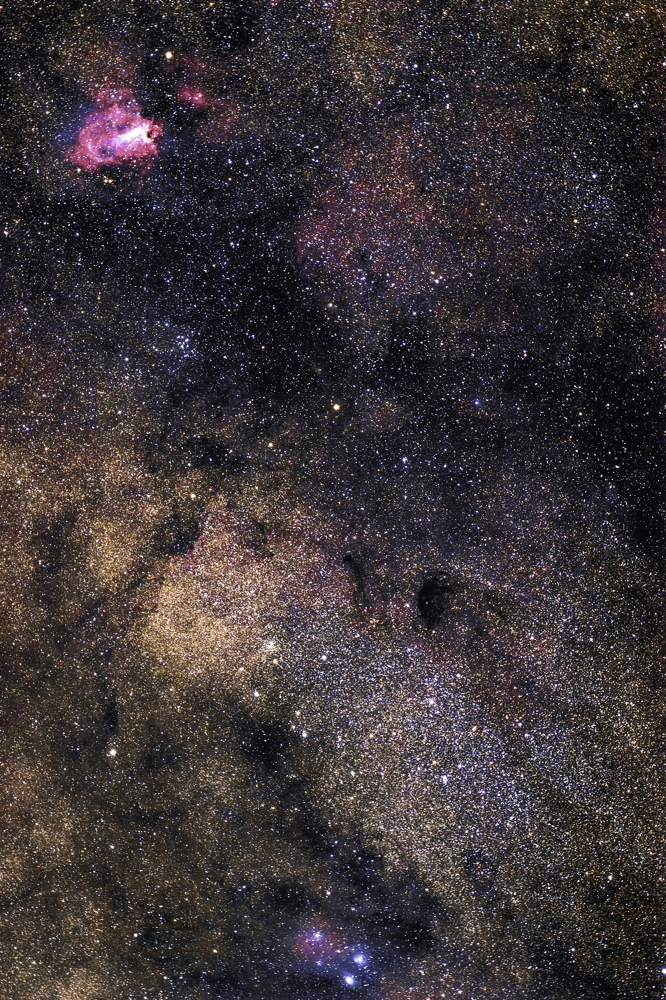
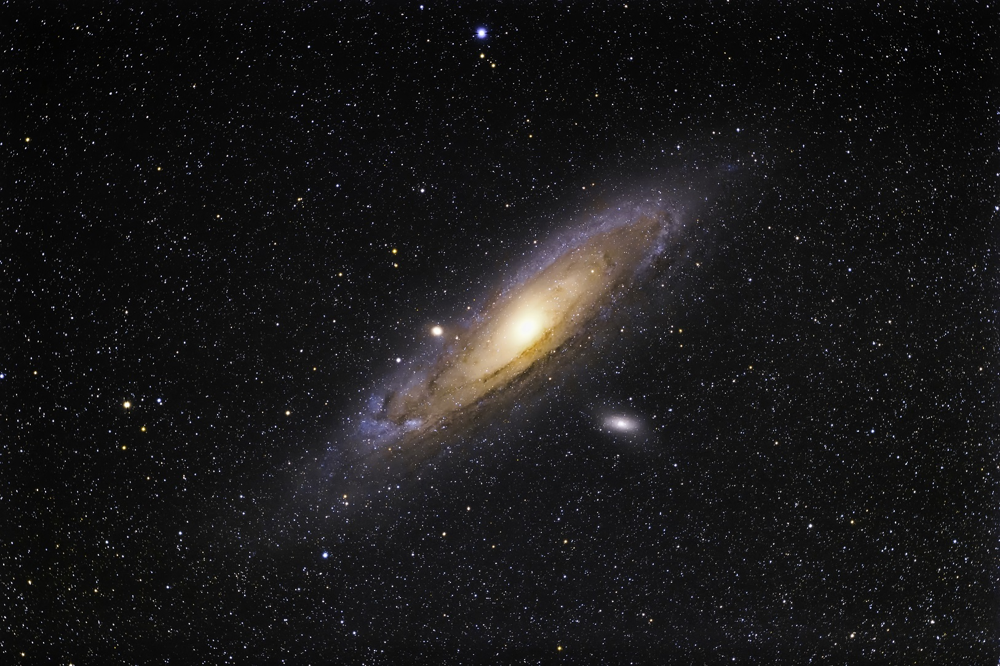

<!DOCTYPE html>
<html>

<head><meta name="generator" content="Hexo 3.8.0">
  <meta charset="utf-8">
  
  <title>【遠征記】2020年8月 天城 | ほしよみ大学生のブログ</title>
  <meta name="viewport" content="width=device-width">
  <meta name="description" content="あいさつこんにちは．修論の執筆なども一段落ついたので，ちょっくら天城まで行ってきました（別に落ち着いてないときでも行ってただろというツッコミはなしで）．">
<meta name="keywords" content="写真,天体写真,鏡筒,赤道儀,パーツ,遠征記">
<meta property="og:type" content="article">
<meta property="og:title" content="【遠征記】2020年8月 天城">
<meta property="og:url" content="http://dabokun.github.io/2020/08/17/00000036-2020-08-amagi/index.html">
<meta property="og:site_name" content="ほしよみ大学生のブログ">
<meta property="og:description" content="あいさつこんにちは．修論の執筆なども一段落ついたので，ちょっくら天城まで行ってきました（別に落ち着いてないときでも行ってただろというツッコミはなしで）．">
<meta property="og:locale" content="ja">
<meta property="og:image" content="http://dabokun.github.io/2020/08/17/00000036-2020-08-amagi/card.jpg">
<meta property="og:updated_time" content="2020-08-17T11:52:06.888Z">
<meta name="twitter:card" content="summary_large_image">
<meta name="twitter:title" content="【遠征記】2020年8月 天城">
<meta name="twitter:description" content="あいさつこんにちは．修論の執筆なども一段落ついたので，ちょっくら天城まで行ってきました（別に落ち着いてないときでも行ってただろというツッコミはなしで）．">
<meta name="twitter:image" content="http://dabokun.github.io/2020/08/17/00000036-2020-08-amagi/card.jpg">
<meta name="twitter:creator" content="@dabo_pic">
  
  <link rel="alternative" href="/atom.xml" title="ほしよみ大学生のブログ" type="application/atom+xml">
  
  
  <link rel="icon" href="/images/favicon.png">
  
  <link rel="stylesheet" href="/css/style.css">
  <!--[if lt IE 9]><script src="//html5shiv.googlecode.com/svn/trunk/html5.js"></script><![endif]-->
  
</head></html>
<body>
  <div id="container">
    <div class="mobile-nav-panel">
	<i class="icon-reorder icon-large"></i>
</div>
<header id="header">
	<h1 class="blog-title">
		<a href="/">ほしよみ大学生のブログ</a>
	</h1>
	<nav class="nav">
		<ul>
			<li><a href="/">Home</a></li><li><a href="/categories">Categories</a></li><li><a href="/tags">Tags</a></li><li><a href="/archives">Archives</a></li><li><a href="/about">About</a></li><li><a href="/work">Work</a></li>
			<li><a id="nav-search-btn" class="nav-icon" title="Search"></a></li>
			<li><a href="https://github.com/dabokun"></a>
			</li>
			<li><a href="https://twitter.com/dabo_pic"></a></li>
			<li><a href="/atom.xml" id="nav-rss-link" class="nav-icon" title="RSS Feed"></a>
			</li>
		</ul>
	</nav>
	<div id="search-form-wrap">
		<form action="//google.com/search" method="get" accept-charset="UTF-8" class="search-form"><input type="search" name="q" class="search-form-input" placeholder="Search"><button type="submit" class="search-form-submit">&#xF002;</button><input type="hidden" name="sitesearch" value="http://dabokun.github.io"></form>
	</div>
</header>
    <div id="main">
      <article id="post-00000036-2020-08-amagi" class="post">
	<footer class="entry-meta-header">
		<span class="meta-elements date">
			<a href="/2020/08/17/00000036-2020-08-amagi/" class="article-date">
  <time datetime="2020-08-17T10:07:06.000Z" itemprop="datePublished">2020-08-17</time>
</a>
		</span>
		<span class="meta-elements author">astr0dab0</span>
		<div class="commentscount">
			
			<a href="http://dabokun.github.io/2020/08/17/00000036-2020-08-amagi/#disqus_thread" class="article-comment-link">Comments</a>
			
		</div>
	</footer>
	
	<header class="entry-header">
		
  
    <h1 class="article-title entry-title" itemprop="name">
      【遠征記】2020年8月 天城
    </h1>
  

	</header>
	<div class="entry-content">
		
		
		<div id="toc" class="toc-article">
			<p class="toc-title">目次</p>
			<ol class="toc"><li class="toc-item toc-level-3"><a class="toc-link" href="#あいさつ"><span class="toc-number">1.</span> <span class="toc-text">あいさつ</span></a></li><li class="toc-item toc-level-3"><a class="toc-link" href="#天城へ"><span class="toc-number">2.</span> <span class="toc-text">天城へ</span></a></li></ol>
		</div>
		
		<h3 id="あいさつ"><a href="#あいさつ" class="headerlink" title="あいさつ"></a>あいさつ</h3><p>こんにちは．修論の執筆なども一段落ついたので，ちょっくら天城まで行ってきました（別に落ち着いてないときでも行ってただろというツッコミはなしで）．</p>
<a id="more"></a>
<h3 id="天城へ"><a href="#天城へ" class="headerlink" title="天城へ"></a>天城へ</h3><p>今回は各方面に一緒に来る人を募集したのですが，みなさん忙しいようでなかなか集まりませんでした．ダメ元で坂本真綾ファン同士で友人の<a href="https://twitter.com/heartpainteriu" target="_blank" rel="noopener">りゅーじんさん</a>に声をかけたところ来ていただけるということで，自宅最寄り駅まで来ていただき，拾ってそのまま天城へ向かいました．彼には<a href="/2019/09/29/00000019-2019-08-30-norikura/">昨年の乗鞍遠征</a>にも来てもらいましたが，あまりスッキリ晴れず，一晩良い空を見せられなかったのが心残りでした．<br>途中，小田原の一夜城に寄ってアイスを食べ，伊東マリンタウンで温泉と夕飯を済ませました．温泉は特定日営業ということでいつもより少し割高，タオル持参で1400円でした．久々にサウナに入れて気持ちよかったです．</p>
<div class="twitter-wrapper"><blockquote class="twitter-tweet"><a href="https://twitter.com/dabo_pic/status/1294536457999138823" target="_blank" rel="noopener"></a></blockquote></div><script async defer src="//platform.twitter.com/widgets.js" charset="utf-8"></script>
<div class="twitter-wrapper"><blockquote class="twitter-tweet"><a href="https://twitter.com/dabo_pic/status/1294555942906785792" target="_blank" rel="noopener"></a></blockquote></div><script async defer src="//platform.twitter.com/widgets.js" charset="utf-8"></script>
<p>20 時過ぎ頃に天城高原GCに到着すると，梅雨にコロナ自粛と星に飢えていた人々で大盛況．Twitter でつながっていた知り合いの方ですら10人くらいいらっしゃることがわかっていたので，予想はできたことですが，あそこまで混雑している天城高原は初めてかもしれません．駐車枠はほぼ埋まっていましたので，ちょっとしたスペースをお借りして車を停めました．なんとか機材展開できるスペースは確保できたので一安心．<br>到着して機材を展開しているとどこからか僕の名前を呼ぶ声がしたので，大きな声で「はーい！！」と返事をしたのですがしばらく誰も来る様子がなく笑．<a href="https://twitter.com/AstronomyPisuke" target="_blank" rel="noopener">ピースケさん</a>と今回始めてお会いした<a href="https://twitter.com/GLASnSCI" target="_blank" rel="noopener">ぐらすのすちさん</a>が僕を呼ぶ声だったようですが，僕があまりに大きな声で返事をしすぎたため，反響してかえって僕がどこにいるのか分からなかったようです．周囲の人にはうるさくして申し訳なかったです．<br>空は明るめでしたが，シーイングもよく晴れ渡っていたので，まずは眼視で惑星を見てもらおうと R200SS，倍率40倍で木星を導入，なんとなく縞模様が見えるといった感じ．次は土星．輪が確認できました．やっぱり20mm だと広がった星雲を見るにはいいですが惑星を見るにはちょっと小さめな印象ですね．もう少し短めの焦点距離のアイピースを買おうかな．<br>鏡筒を FSQ に変えて，撮影を開始．今回まず狙ったのはM17「オメガ星雲」とM24「バンビの横顔」のセットです．135mm を使っていた時のクセで，隙あらば2天体をセットで撮影してしまいます．</p>
<p></p>
<div style="text-align: center;"><br>「M17 オメガ星雲，M24 バンビの横顔」<br>2020年8月15日 午後9時50分～ 天城高原ゴルフコースにて<br>タカハシ FSQ-85EDP (450mm F5.3)<br>Canon EOS 6D<br>ISO 2000 / 180s * 20 = 60 min<br>タカハシ EM-11 Temma2Jr. ノータッチガイド<br>ライトダーク: ライトと同条件 * 16<br>フラット: 自宅にて ISO-2000 / 1/2000s * 16<br>フラットダーク: フラットと同条件 * 16<br>RStacker / ステライメージ8 / Adobe Lightroom CC / Photoshop CC<br><a href="https://www.astrobin.com/7vnbza/C/" target="_blank" rel="noopener">[AstroBin]</a>, <a href="https://www.flickr.com/photos/138311056@N05/50232358622/in/dateposted-public/" target="_blank" rel="noopener">[Flickr]</a>, <a href="https://astrodabo.tumblr.com/post/626609519167963136/m17-m24-star-cloud-at-amagi-plateau-golf-cource" target="_blank" rel="noopener">[Tumblr]</a><br><br></div>

<p>おかげで首飾りもギリギリといった感じ．今年はもう無理かもしれませんが，次狙う時は南の大きな暗黒星雲も含めて撮影したい．<br>りゅーじんさんもカメラを持ってきてもらっていた（10年以上前の古いモデルですが）ので，親子亀方式で赤道儀につけて少し撮影してもらいました．<br>バンビが木陰に沈んでからはアンドロメダに移動しました．こちらはこれからが撮り時の天体なので，次は露光時間をガッツリ費やしたいところです．</p>
<p></p>
<div style="text-align: center;"><br>「M31 アンドロメダ銀河」<br>2020年8月16日 午前0時19分～ 天城高原ゴルフコースにて<br>タカハシ FSQ-85EDP (450mm F5.3)<br>Canon EOS 6D<br>ISO 2500 / 180s * 20 = 60 min<br>タカハシ EM-11 Temma2Jr. ノータッチガイド<br>ライトダーク: ライトと同条件 * 16<br>フラット: 自宅にて ISO-2500 / 1/4000s * 16<br>フラットダーク: フラットと同条件 * 16<br>RStacker / ステライメージ8 / Adobe Lightroom CC / Photoshop CC<br><a href="https://www.astrobin.com/18moj8/" target="_blank" rel="noopener">[AstroBin]</a>, <a href="https://www.flickr.com/photos/138311056@N05/50235808443/in/dateposted-public/" target="_blank" rel="noopener">[Flickr]</a>, <a href="https://astrodabo.tumblr.com/post/626696443555676160/m31-andromeda-galaxy-at-amagi-plateau-golf-course" target="_blank" rel="noopener">[Tumblr]</a><br><br></div>

<p>ぐらすのすちさんに熱エネルギーを提供してもらって（ありがとうございます）お湯を沸かし，買ってきたカップ麺を食べました．早くお湯沸かしセットを買わないと…．結局今年キャンプ用品はチェアしか買ってないですね(´・ω・｀)．食べている途中に，まだ高校生（若い！）の<a href="https://twitter.com/haya_astronomy" target="_blank" rel="noopener">Rambさん</a>にも来ていただき，お話させていただきました．<br>また，撮影中にはぐらすのすちさんやピースケさん，<a href="https://twitter.com/ShonanAstroPhot" target="_blank" rel="noopener">けーたろさん</a>，<a href="https://twitter.com/magicalflute77" target="_blank" rel="noopener">Aramisさん</a>ともお話させていただきました．Aramis さんとは（<a href="http://aramister.blog.fc2.com/blog-entry-454.html" target="_blank" rel="noopener">彼のブログ</a>にも書かれていることですが）東方 Project のお話で盛り上がりました．東方は主に弾幕シューティングゲームを一次創作とする創作物で，権利関係が他より甘く，ゲーム，音楽，同人誌などの二次創作が大変活発になされている界隈です．気になる方は詳しくはググってください笑．あまり天文民で東方を知っている &amp; 原作を熟知している人も少ない（僕も熟知しているかは微妙ですが）ので，やけに仲間意識が芽生えてしまうところですね．ちなみにAramis さんは地霊殿が好きだそうで，音楽 CD も 300 枚は所持しているガチ勢だとか（すごい）．僕も風神録地霊殿星蓮船の三分作はとても好きですが，やっぱり一番好きなのは風神録ですかね，この三作のなかでは一番難易度が低いので．好きなキャラは射命丸，妖怪の山で中学生の頃初めて変拍子という概念を知った．あ，詳しくはググってください笑．</p>
<p>さて，楽しく話をしたり，のんびり星空を眺めたりしていたりしているうちに夏の天の川は西の空にかかり，月が上ろうというところ．今回来ていただいたりゅーじんさんと記念撮影をし，僕は車で少し仮眠をとりました．</p>
<div class="twitter-wrapper"><blockquote class="twitter-tweet"><a href="https://twitter.com/dabo_pic/status/1294772998063316992" target="_blank" rel="noopener"></a></blockquote></div><script async defer src="//platform.twitter.com/widgets.js" charset="utf-8"></script>
<p>起きだすと細い月と金星が並んで輝いていたので，R200SS に付け替え，再度眼視を楽しみました．月は地球照部分の模様もはっきりと確認でき，立体感がリアルでした．金星は半月状に欠けているのを確認できました．夏の天の川の高度もかなり落ちていたので，到着時にあきらめていたアルビレオや，h-χ，すばる，上ってきたオリオン大星雲などを見て，撤収しました．<br>4時過ぎに出発で帰りも滞りなく，休憩一回で午前7時前には帰宅することができました．りゅーじんさんにも大変満足してもらえたようで，坂本真綾ライブ時に家に泊めていただいたり，真綾ファンオフ会に参加させていただいたりした恩をお返しできたと思っています．<br><div class="twitter-wrapper"><blockquote class="twitter-tweet"><a href="https://twitter.com/heartpainteriu/status/1294606053338787841" target="_blank" rel="noopener"></a></blockquote></div><script async defer src="//platform.twitter.com/widgets.js" charset="utf-8"></script><br><div class="twitter-wrapper"><blockquote class="twitter-tweet"><a href="https://twitter.com/heartpainteriu/status/1294786004591636481" target="_blank" rel="noopener"></a></blockquote></div><script async defer src="//platform.twitter.com/widgets.js" charset="utf-8"></script><br><div class="twitter-wrapper"><blockquote class="twitter-tweet"><a href="https://twitter.com/heartpainteriu/status/1294995338093137920" target="_blank" rel="noopener"></a></blockquote></div><script async defer src="//platform.twitter.com/widgets.js" charset="utf-8"></script><br><div class="twitter-wrapper"><blockquote class="twitter-tweet"><a href="https://twitter.com/heartpainteriu/status/1294994708389748736" target="_blank" rel="noopener"></a></blockquote></div><script async defer src="//platform.twitter.com/widgets.js" charset="utf-8"></script><br><div class="twitter-wrapper"><blockquote class="twitter-tweet"><a href="https://twitter.com/heartpainteriu/status/1294996490977292288" target="_blank" rel="noopener"></a></blockquote></div><script async defer src="//platform.twitter.com/widgets.js" charset="utf-8"></script><br>嬉しいのでめちゃくちゃツイートを貼ってしまう．</p>
<p>そうそう，今回の遠征には残念ながら間に合わず使えませんでしたが，FSQ 用フラットナーが届いたので，次の遠征には持っていきたいです．</p>
<div class="twitter-wrapper"><blockquote class="twitter-tweet"><a href="https://twitter.com/dabo_pic/status/1295228237090394113" target="_blank" rel="noopener"></a></blockquote></div><script async defer src="//platform.twitter.com/widgets.js" charset="utf-8"></script>
<p>それではまた！</p>

		
	</div>
	<footer class="article-footer">
		<a href="https://twitter.com/intent/tweet?text=%E3%80%90%E9%81%A0%E5%BE%81%E8%A8%98%E3%80%912020%E5%B9%B48%E6%9C%88%20%E5%A4%A9%E5%9F%8E｜%E3%81%BB%E3%81%97%E3%82%88%E3%81%BF%E5%A4%A7%E5%AD%A6%E7%94%9F%E3%81%AE%E3%83%96%E3%83%AD%E3%82%B0&url=http://dabokun.github.io/2020/08/17/00000036-2020-08-amagi/" class="twitter-share-button" target="_blank" title="Twitter"></a>
		<script async src="https://platform.twitter.com/widgets.js" charset="utf-8"></script>

		<div id="fb-root"></div>
		<script async defer crossorigin="anonymous" src="https://connect.facebook.net/ja_JP/sdk.js#xfbml=1&version=v4.0"></script>
		<div class="fb-share-button" data-href="http://dabokun.github.io/2020/08/17/00000036-2020-08-amagi/" data-layout="button_count" data-size="small"><a target="_blank" href="https://www.facebook.com/sharer/sharer.php?u=https%3A%2F%2Fdabokun.github.io%2F&amp;src=sdkpreparse" class="fb-xfbml-parse-ignore">シェア</a></div>
	</footer>
	<footer class="entry-footer">
		<div class="entry-meta-footer">
			<span class="category">
				
  <div class="article-category">
    <a class="article-category-link" href="/categories/expedition/">遠征記</a>
  </div>

			</span>
			<span class=" tags">
				
  <ul class="article-tag-list"><li class="article-tag-list-item"><a class="article-tag-list-link" href="/tags/parts/">パーツ</a></li><li class="article-tag-list-item"><a class="article-tag-list-link" href="/tags/photography/">写真</a></li><li class="article-tag-list-item"><a class="article-tag-list-link" href="/tags/astrophotography/">天体写真</a></li><li class="article-tag-list-item"><a class="article-tag-list-link" href="/tags/mount/">赤道儀</a></li><li class="article-tag-list-item"><a class="article-tag-list-link" href="/tags/expedition/">遠征記</a></li><li class="article-tag-list-item"><a class="article-tag-list-link" href="/tags/telescope/">鏡筒</a></li></ul>

			</span>
		</div>
	</footer>
	
	
<nav id="article-nav">
  
    <a href="/2020/08/22/00000037-2020-08-hoshinomura/" id="article-nav-newer" class="article-nav-link-wrap">
      <strong class="article-nav-caption">Newer</strong>
      <div class="article-nav-title">
        
          【遠征記】2020年8月 星の村天文台
        
      </div>
    </a>
  
  
    <a href="/2020/07/20/00000035-2020-07-neowise/" id="article-nav-older" class="article-nav-link-wrap">
      <strong class="article-nav-caption">Older</strong>
      <div class="article-nav-title">
        
          2020年7月 撮ったぜネオワイズ
        
      </div>
    </a>
  
</nav>

	
</article>


<section id="comments">
	<div id="disqus_thread">
		<noscript>Please enable JavaScript to view the <a href="//disqus.com/?ref_noscript">comments powered by
				Disqus.</a></noscript>
	</div>
</section>

    </div>
    <div class="mb-search">
  <form action="//google.com/search" method="get" accept-charset="utf-8">
    <input type="search" name="q" results="0" placeholder="Search">
    <input type="hidden" name="q" value="site:dabokun.github.io">
  </form>
</div>
<footer id="footer">
	<h1 class="footer-blog-title">
		<a href="/">ほしよみ大学生のブログ</a>
	</h1>
	<span class="copyright">
		&copy; 2020 astr0dab0<br>
		Modify from <a href="http://sanographix.github.io/tumblr/apollo/" target="_blank">Apollo</a> theme, designed by <a href="http://www.sanographix.net/" target="_blank">SANOGRAPHIX.NET</a><br>
		Powered by <a href="http://hexo.io/" target="_blank">Hexo</a>
	</span>
</footer>
    
<script>
  var disqus_shortname = 'astr0dab0';
  
  var disqus_url = 'http://dabokun.github.io/2020/08/17/00000036-2020-08-amagi/';
  
  (function(){
    var dsq = document.createElement('script');
    dsq.type = 'text/javascript';
    dsq.async = true;
    dsq.src = '//go.disqus.com/embed.js';
    (document.getElementsByTagName('head')[0] || document.getElementsByTagName('body')[0]).appendChild(dsq);
  })();
</script>


<script src="//ajax.googleapis.com/ajax/libs/jquery/2.0.3/jquery.min.js"></script>


<link rel="stylesheet" href="/fancybox/jquery.fancybox.css" media="screen" type="text/css">
<script src="/fancybox/jquery.fancybox.pack.js"></script>


<script src="/js/script.js"></script>
  </div>
</body>
</html>